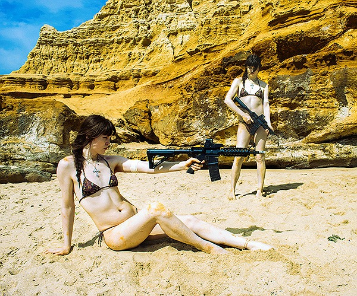
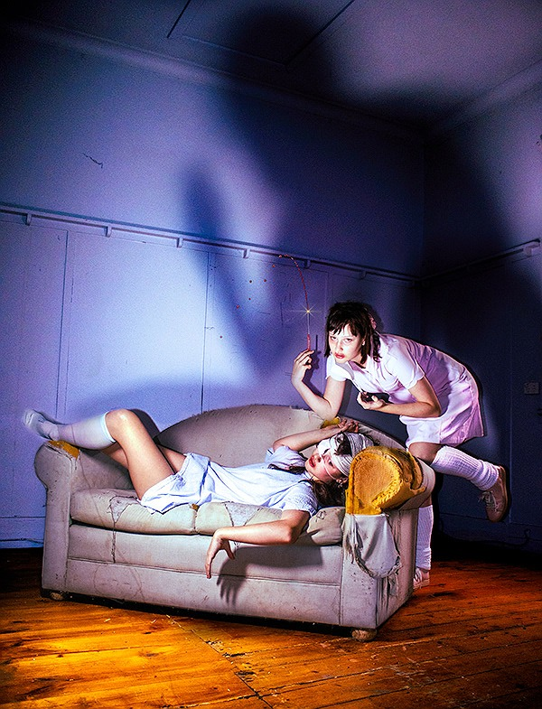

Baras-Miller's photographic style takes its cues from the psychedelic colours and movement of 2000s Japanese fashion magazines as well as 2000s pop aesthetics more generally. The frenetic movement that Baras-Miller creates through his use of framing, lighting and oversaturated editing is almost overwhelmin, and imbues the images with a surrealist disorientation. The essence of his photography is explosively happy, and through tongue-in-cheek humour, the artist winks at his audience. I think his work is really beautiful and plays with nostalgia and referencing recent history in a way that feels very true to my memory of being a child in the 2000s.
click here to learn more


make space!